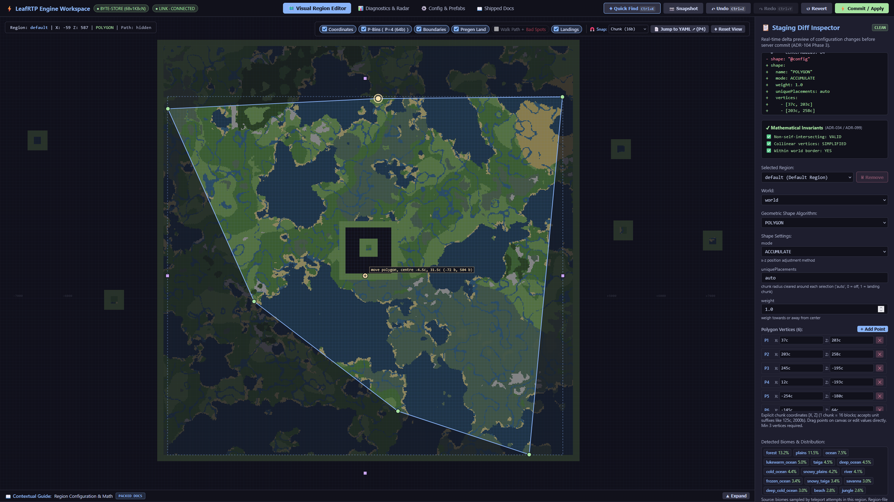
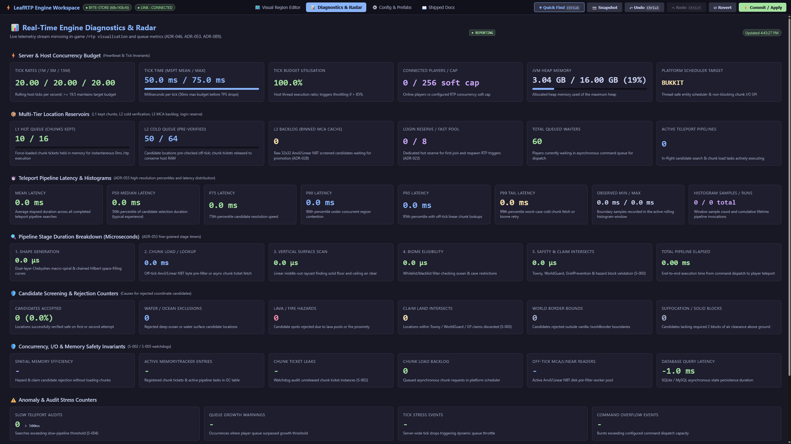
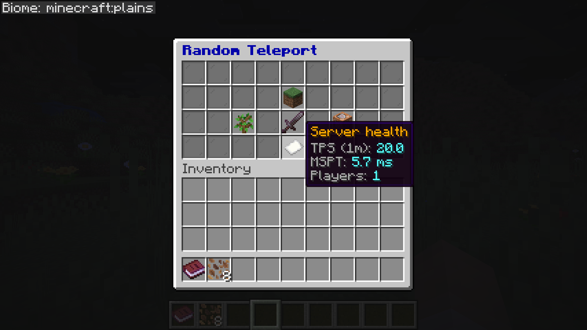

Features¶
Everything LeafRTP does, by audience. The short version is on the project page; this is the full list.
Common setups¶
These work without extra plugins:
- Spawn portals & launch pads: Step-in trigger zones over portal frames or launch pads run teleports, with an optional countdown hologram and effects.
- Group & party scatter: The bundled
scatter.ymlaction sends queued parties to safe spots at leastminSeparationblocks apart. - First-join random spawn: Grant
rtp.onevent.firstjointo send new players to random spots on login; the login reserve cache keeps a destination pre-warmed so arrival is quick. - 1v1 and 2v2 PvP matchmaking: Bundled
challenge.yml,arena.yml, andteams.ymlactions queue and pair players for 1v1 duels or 2v2 squad battles into temporary bounded arenas with countdowns and border constraints, cleaned up automatically. - Near-player & claim hunting: Bundled
nearplayer.ymlandnearclaim.ymlactions land players safely near random players or town and claim perimeters (anchor: entity,anchor: claimboundary) without inline claim-plugin overhead. - Sky drops: A
Fixedvertical adjustor at Y=250+ pairs with a slow-falling potion effect for aerial parachute drops. - Survival and resource worlds: In two Paper 26.2 runs of 4,096 teleports each, no two landings were within 48 blocks and the closest pair was 70 blocks apart, without tracking players. The default
REROLLmode doesn't repeat a spot until the shuffle has cycled; onACCUMULATEa used spot can come up again at about the random-pick rate.
Setting it up¶
All configuration routes edit the same files, accept human units (radius: 10km, teleportCooldown: 30s), and hot-reload via /rtp reload.
- Web Workspace (
/rtp editor): Browser admin with no port forwarding. Drag region boundaries on a map and search YAML by intent with live setting docs beside each key. A diagnostics tab shows live tick, queue and latency stats. - In-Game Admin Book (
/rtp admin): Clickable operator book for inspecting queues and reloading configs in game. - Chat Wizard (
/rtp admin setup): 60-second guided questionnaire sizing regions to world borders with automatic backups. - Config & Permission Import (
/rtp config import): Detects other rtp plugins' folders automatically, or takes any folder withpath=<dir>. Maps worlds, radii, shapes, cooldowns, delays, prices, database, effects and portal zones; anything it can't map is listed as a warning. Dry-runs the LuckPerms commands for BetterRTP, JustRTP and EzRTP nodes. - Spatial Pregeneration (
/rtp scan): Checks region files off-tick ahead of time, recording biomes, invalidity causes, and claims at chunk resolution. - Live Visualizations (
/rtp visualization): Renders boundaries, biome layouts, and candidate heatmaps onto held in-game maps. - Engine Diagnostics (
/rtp info): Live queue depth, latency percentiles, and per-region generation rates. - 11 languages (
/rtp config language <locale>): Config files and messages in German, Spanish, French, Italian, Japanese, Korean, Dutch, Polish, Portuguese, Russian and Chinese. Some keys are still in English; translations are welcome.

Any boundary shape: a six-vertex polygon, with a diff of the staged change and validity checks.

Diagnostics tab: tick budget, queue depth per tier, and pipeline latency percentiles.
More web editor screenshots
 *Region editor: polygon boundaries over the terrain, with landing candidate previews.*  *Settings editor with each setting's description alongside and a diff of staged changes.*
 
*`/rtp admin`: the operator book and its config file list.*
For players¶
/rtpand/wild: teleport to the world's default region, or pick a region, world or biome (/rtp region=<name>,/rtp biome=<biome>)./rtp backreturns players to their prior location.- Menus & custom items:
/rtp menuopens an interactive player book on Paper, Folia, Fabric and NeoForge (chat pages on Spigot) for teleporting or picking a region, world or biome. The bundled GUI addon adds a chest-based destination picker with barrier indicators for blocked destinations, customizable hover lore, and prefix routing for custom items (ia:,oraxen:,nexo:,hdb:, Base64 heads, and CustomModelData; see item compatibility). - Per-player queues (
rtp.personalqueue): personal reserve queues alongside the shared queue, so a surge doesn't delay a player who has one reserved. - Effects: particles, sounds, fireworks, potions, titles, action bar notices, console or player commands, and holograms on every teleport phase, each controlled by
rtp.effect.<stage>.*permissions. Holograms use the 1.19.4+ text display entity directly; DecentHolograms and HolographicDisplays are supported if present. - Landing platforms & safety: temporary landing platforms decay automatically so nobody drops into ocean, void or open air, paired with a post-teleport invulnerability window, cancel on movement or damage, countdown holograms and warmup messages.

/rtp menu: in-game chest menu with live server health and destination selection.
Gameplay and worlds¶
- Regions: any number per world with customizable shape (Square, Circle, Ellipse, Rectangle, Polygon), radius, center, curve weighting, vertical bounds, world override, required permission, and price. Vertical adjustors (Linear, Jump, Fixed) for sky islands, void worlds, aerial parachute drops, and Nether ceilings. A world's
overridekey (definitions/worlds/<name>.yml) routes Nether or End teleports to designated safe worlds. - Arrival schematics: drop a Sponge
.schemnamed after a region intoplugins/RTP/advanced/schematics/and every teleport into that region pastes it centered on the landing spot. Decoded in-house, no WorldEdit needed, and claim-aware. - Auto-RTP on events: join, first join, respawn, world change, move, and teleport (
rtp.onevent.*). A login reserve cache keeps destinations ready so join-time teleports are served from the queue. - Economy: charge per
/rtpthrough Vault, per-region pricing, refund on cancel, andrtp.freepermission bypass. - PvP / combat-tag check: off by default; refuses or delays
/rtpfor players who recently dealt or took PvP damage. Includes built-in tracking or hooks into PvPManager, CombatLogX, or Simple Combat Log if installed. - Command blocks and console: the same command parser handles player, console, and command-block callers.
Action engine: portals, party scatter & arenas¶
An extensible action pipeline for group events, boundary confinement, and minigames:
- Step-in portals: Configurable trigger zones for portals and launch pads with countdown holograms, particles, and sounds.
- Party & group scatter: Sends a queued party out together, guaranteeing a minimum block spacing between teammates.
- 1v1 & 2v2 arenas (
/rtp action challenge <player>): Matchmaking duels in temporary bounded arenas with countdowns and automated border cleanup. - Anchor drops: Land players relative to teammates (
anchor: entity) or outside town claims (anchor: claimboundary). - Event scripts: Trigger console commands, titles, sounds, or potion effects on match start, boundary violation, or finish.
Templates and configuration options: Actions & arenas guide.
Claims and safety¶
- Claim plugins: 16 on Bukkit / Paper / Folia through the bundled claim addon (GriefDefender, GriefPrevention, Lands, WorldGuard, TownyAdvanced, SaberFactions, FactionsBridge, HuskClaims, HuskTowns, PlotSquared, RedProtect, CrashClaim, KingdomsX, Residence, UltimateClaims, MinePlots), plus FTB Chunks and Open Parties and Claims on Fabric / NeoForge. Claim checks run in the async pipeline, off the teleport tick. You can add your own through
RegionVerifierRegistrywith one lambda. - Claim and faction anchors: an action can land players relative to their own town, claim or faction land (
anchor: claimboundary,anchor: faction). Towny, GriefPrevention and SaberFactions / FactionsUUID boundaries are supported directly; others plug in throughClaimBoundaryProvider. The anchor stays put while it's inside the claim and is recomputed at most once per cooldown. - Safety filter: the block lists in
advanced/blocks.yml(unsafeBlocks,airBlocks) take plain materials, block-state predicates (OAK_SLAB[waterlogged=true]), numeric ranges (WATER[level>=5]), vanilla and datapack block tags (#minecraft:leaves) and wildcards (*[waterlogged=true]). Grammar is in the details below.
Networks¶
- Cross-server
/rtp: Velocity, over proxy-direct, SQL or Redis. Tested nightly on the in-repo devstack: 2 Velocity proxies, 2 lobbies and 4 backends (Paper, Folia, Fabric, NeoForge) behind Redis.
For developers¶
- API and addons:
rtp-api(pre / mid / post teleport hooks, region verifiers, config, scheduling) andeffects-api. A third-party addon needs onlyrtp-apiand loads through aServiceLoaderSPI; an addon built onrtp-apialone runs on Spigot, Paper, Folia, Fabric and NeoForge. The bundled addons (GUI picker, claim integrations, Countdown reference, scripted actions) also usertp-coreinternals. They unpack intoplugins/RTP/addons/on first run; delete one from that folder to turn it off. Their source, and the Rift warmup-effect addon's, is underaddons/as a starting point. - Swappable parts: server backend, economy, location validity, shapes, world border, PvP checks, region file format and commands can all be replaced through SPI.
- PlaceholderAPI: queue depth (total / public / personal), last-teleport coordinates, player status.
- bStats: on by default; anonymous usage counts help me decide which platforms to spend time on.